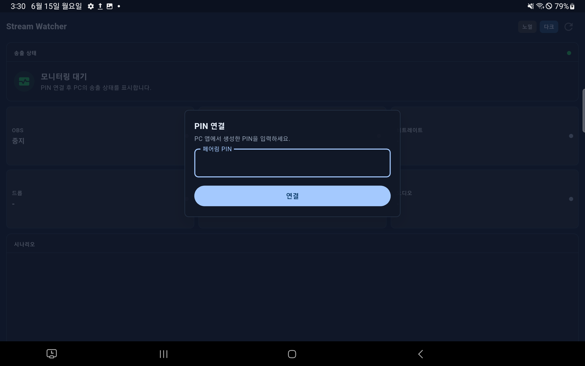
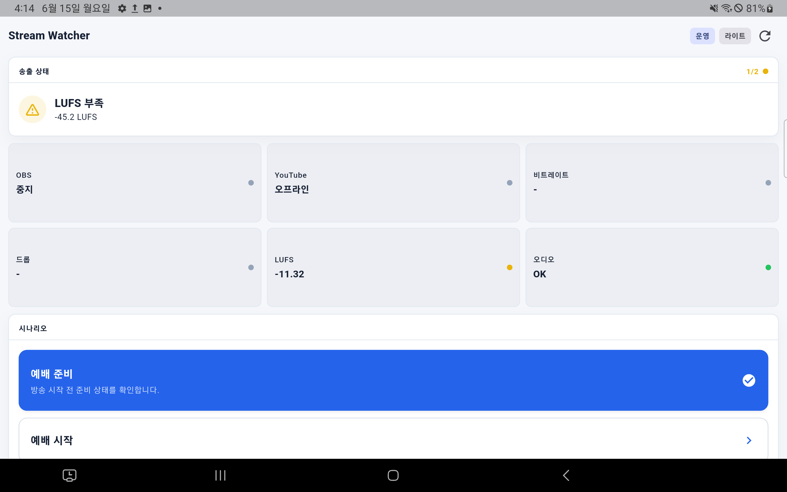
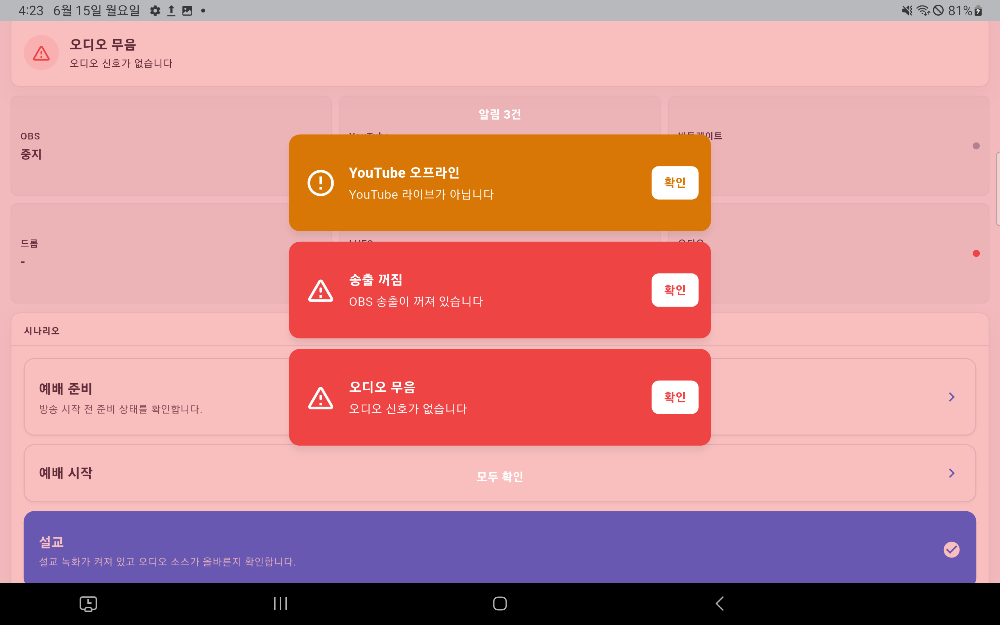

Stream Watcher
태블릿 사용 매뉴얼
PC 프로그램 Stream Capture를 모바일로 모니터링하고, 시나리오를 리모트 컨트롤할 수 있습니다.
버튼과 주요 영역에는 번호 라벨을 붙여 조작 위치를 바로 확인할 수 있습니다.
1. 준비하기
- PC에서 Stream Capture를 실행합니다.
- 태블릿과 PC를 같은 Wi-Fi 또는 같은 로컬 네트워크에 연결합니다.
- PC 앱에서 태블릿 연결용 PIN을 생성합니다.
- 태블릿에서 STREAM Watcher 앱을 실행합니다.
2. PIN으로 연결하기
태블릿 앱을 처음 실행하면 PIN 연결 화면이 표시됩니다. PC 앱에서 생성한 PIN을 입력한 뒤 연결합니다.

1 PIN 입력 2 연결1PC 앱에서 표시된 PIN을 입력합니다.
2연결 버튼을 눌러 페어링합니다.
3. 연결 문제 해결
- PC의 Stream Capture가 실행 중인지 확인합니다.
- 태블릿과 PC가 같은 Wi-Fi에 연결되어 있는지 확인합니다.
- VPN, 게스트 Wi-Fi, 방화벽이 로컬 네트워크 통신을 막고 있지 않은지 확인합니다.
- PC 앱에서 새 PIN을 생성한 뒤 다시 연결합니다.
4. 대시보드 확인하기
연결 후에는 방송 상태 대시보드가 표시됩니다. OBS, YouTube, 비트레이트, 드롭, LUFS, 오디오 상태를 한 화면에서 확인합니다.
1 노멀 / 운영
2 다크 / 라이트
3 새로고침
4 송출 상태
5 상태 카드
6 시나리오

1노멀 / 운영 모드를 선택합니다.
2다크 / 라이트 테마를 전환합니다.
3새로고침으로 현재 상태를 다시 불러옵니다.
4전체 방송 상태와 대표 알림을 확인합니다.
5OBS, YouTube, 비트레이트, 드롭, LUFS, 오디오를 확인합니다.
6방송 진행 단계별 체크 항목입니다.
5. 일반 모드와 운영 모드
노멀
상태 확인 전용 모드입니다. 시나리오 단계 변경이 잠겨 실수 조작을 줄입니다.
상태 확인 전용 모드입니다. 시나리오 단계 변경이 잠겨 실수 조작을 줄입니다.
운영
방송 진행 중 태블릿에서 시나리오 단계를 직접 변경할 수 있습니다.
방송 진행 중 태블릿에서 시나리오 단계를 직접 변경할 수 있습니다.
시나리오 단계 변경
- 상단에서 운영 모드를 선택합니다.
- 시나리오 영역에서 이동할 단계를 누릅니다.
- 선택된 단계는 파란색으로 강조됩니다.
6. 알림 확인하기
방송 상태에 문제가 생기면 화면 전체가 강조되고 알림 카드가 표시됩니다.
1 알림 내용
2 확인
3 모두 확인

1알림 제목과 메시지를 확인합니다.
2확인 버튼으로 진동과 팝업을 멈춥니다.
3모두 확인으로 여러 알림을 한 번에 확인합니다.
7. 알림 이벤트 로그 확인하기
대시보드 하단으로 스크롤하면 알림 이벤트 영역이 표시됩니다. 최근 발생한 알림 기록과 확인 여부를 다시 볼 수 있습니다.
알림 이벤트
드롭 프레임 높음
드롭 8.1%
확인 전
드롭 8.1%
YouTube 라이브 감지 지연
YouTube 연결 상태를 확인하세요.
확인됨
YouTube 연결 상태를 확인하세요.
오디오 정상
오디오 입력이 정상으로 복구되었습니다.
기록
오디오 입력이 정상으로 복구되었습니다.
1놓친 알림이나 이미 확인한 알림을 다시 확인합니다.
2문제 조치 후 어떤 알림이 먼저 발생했는지 순서를 확인합니다.
8. 권장 사용 흐름
방송 시작 전
- PC에서 Stream Capture를 실행합니다.
- 태블릿 앱을 열고 PIN으로 연결합니다.
- OBS, YouTube, 비트레이트, 오디오 상태를 확인합니다.
- 필요하면 운영 모드로 전환해 시나리오 단계를 맞춥니다.
방송 중
- 태블릿을 보이는 위치에 두고 대시보드를 확인합니다.
- 알림이 뜨면 내용을 확인하고 원인을 조치합니다.
- 알림 카드의 확인 버튼을 눌러 진동을 멈춥니다.
- 단계 변경이 필요할 때만 운영 모드로 전환합니다.